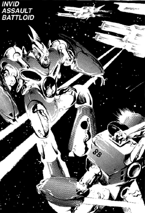

The following material is from
THE THIRD INVID
WAR, a fan supplement by
Dave Deitrich and
Chris
Meadows. Please feel free to use, copy, and distribute
it as you see fit. All we ask is that you give proper credit to us and do not
claim that it is your own work. Comments and suggestions are welcome.
THE INVID ASSAULT BATTLOID
BACKGROUND

When it appeared in early 2043, the Invid Assault Battloid was quickly
identified as an obvious upgrade of the old Royal Command Battloid
design. However, REF field scientists also noted with much curiosity
that it was also the least changed of all the redesigned Invid mecha
encountered so far. It seemed clear that far more development had gone
into some of the other designs, such as the Combat Trooper and Space
Trooper, than the Assault Battloid. The mystery further deepened later
that year when a FAR more powerful Invid battloid design, the Warlord
Battloid, appeared on Earth. Judging on the data obtained from both
designs so far, REF analysts have come up with two possible explanations
for the different battloid designs. Either the Assault Battloid is a
prototype version of the new Warlord battloid, or the two different
mecha represent some new social stratification among Stage 5 Invid.
Despite it's seeming lack of development, the Invid Assault Battloid
should not be underestimated. The basic body design of the mecha is
very similar to the older Royal Command Battloid. In fact, the legs,
main body, and head of the mecha are almost identical! The backpack
unit for the mecha is also similar, and still contains the main jets and
missile bays for the mecha. However, the new battloid is equipped with
a much more powerful engine system which makes the unit faster and very
powerful.
The big change in the Assault Battloid is a dramatic increase in the
mecha's firepower. Two large particle beam cannons are now mounted on
each shoulder of the mecha. These cannons are similar in style to the
one on the Invid Sentinel; the cannons are mounted on a ball-joint
system and can swivel 90 degrees upward, 20 degrees downward, or 30
degrees from side to side, measured from the front of the mecha. In
addition to the shoulder-mounted PBCs, the old shielded plasma weapon in
the forearm has been redesigned. A new plasma cannon is now mounted on
each arm, and is an integral part of the lower arm unit. The forearms
are no longer protected by a detachable shield, and the plasma cannons
cannot be detached from the arms. The Assault Battloid also has the
same missile launchers as the older RCB design.
Resistance fighters and REF soldiers have had extensive battlefield
contact with Assault Battloids. The mecha's higher firepower and
maneuverability coupled with the unpredictability of the stage 5 Invid
pilot make it a dangerous opponent, despite its lack of redesign. All
troops are warned not to underestimate the new Assault Battloid in
combat.
GM NOTE: the reason for the two different mecha is that the Assault
Battloid is intended for stage 5 Invid, while the Warlord Battloid is
intended for stage 6 Invid. REF analysts are currently unaware that the
Regis has become dissatisfied with the performance of the stage 5 Invid,
and has "created" a new race of Invid to replace them. This is one of
the reasons that stage 5 Invid aren't terribly fond of stage 6 Invid.
SCHEMATICS
 Click on the icon to the left to view the schematics of the Combat Trooper,
based on data collected by REF Intelligence.
Click on the icon to the left to view the schematics of the Combat Trooper,
based on data collected by REF Intelligence.
RPG STATS
Invid Name: "Gamun"; REF Nickname: "Marauder"
Vehicle Type: All-purpose combat battloid.
Crew: One; Stage Five Invid Pilot
M.D.C. BY LOCATION
* Forearm/Plasma Cannon (2) 200
Upper Arms (2) 100 each
Hands (2) 50 each
Particle Beam Cannons (2) 60 each
Legs & Feet (2) 200 each
Jet Thrusters/Missile Pods (2) 120 each
** Head Sensor Unit 50
*** Main Body 350
Pilot's Compartment 150
Notes:
- *
- Destroying the Forearm will knock out the Plasma Cannon. The
Plasma Cannons CANNOT be targeted separately; the forearms must be
destroyed to get rid of the cannons.
- **
- This head sensor is not like the eye sensor. Its destruction will
knockout all sensor systems, leaving the pilot to rely only on
visuals. Its destruction will not destroy the mecha nor hurt the
pilot.
- ***
- Depleting the M.D.C. of the main body will shut the mecha down
completely.
SPECIFICATIONS
- Flight:
- Stationary hover to 1340 mph (Mach 2) maximum, with a maximum
altitude of about 50,000 ft. Cruising speed for reconnaissance
is 60 to 150 mph (96 to 240 kmph). Stationary hover and low
speeds can be maintained at any altitude.
- Running:
- 70 mph (112 kmph).
- Jumping:
- 50 ft (15.2 m) up or across without boosters, or 300 ft (91.5
m) with booster assistance.
- Height:
- 30 ft (9.1 m) with cannons lowered, 36 ft (10.9 m) with cannons
raised.
- Width:
- 13 ft (4 m)
- Length:
- 12 ft (3.6 m)
- Weight:
- 26 tons
- Cargo:
- Can carry up to 6 tons
- Abilities:
- Pilot Mecha - 90%
- Recognize Human Machinery - 50%
- Navigation - 80%
- Navigation: Space - 85%
- Prowl - 60%
- Detect Ambush - 60%
- Detect Concealment - 50%
- Track - 65%
WEAPON SYSTEMS
- PARTICLE BEAM CANNONS. The main weapons of the Assault Battloid are
a pair of powerful particle beam cannon mounted on each shoulder.
The cannons are mounted on a ball turret, and can move 20 degrees
downward, 90 degrees upward, and 30 degrees to either side. They
cannot point behind the mecha.
- Primary Purpose: Heavy Assault
- Range: 6000 ft (1800 m)
- Damage: 4D10 M.D. per single blast. 8D10 M.D. per dual blast (counts
as one attack). Bursts are not possible.
- Rate of Fire: Due to an automatic cool-down cycle, the PBC can fire a
maximum of THREE TIMES per melee round.
- Payload: Unlimited
- Bonuses to Strike: +2 to strike, plus protoculture targeting
bonuses.
- IMPROVED PLASMA CANNONS. The shielded plasma cannon of the older
RCB design has been replaced with two newer plasma cannons, one mounted
on each arm. These cannons CANNOT be ejected like the older designs.
The only way to remove/destroy the cannons is to destroy the forearms
of the Assault Battloid.
- Primary Purpose: Assault
- Range: 4000 ft (1200 m)
- Damage: Single shot does 4D6 M.D., and dual single shots do
1D6x10 M.D. A single burst does 1D6x10 M.D., and dual bursts do 2D6x10
M.D. (Single shots, dual shots, single bursts, and dual bursts all
count as one attack) A strafing, continuous full melee burst
(shooting wild), does 2D6 M.D. for each item or area hit if one
arm cannon is used, or 4D6 M.D. if both arm cannons are used.
Shooting wild counts as ALL attacks, regardless if one or both
arms are used.
- Rate of Fire: Equal to hand to hand attacks (5 single shots or 5
bursts).
- Payload: Unlimited.
- Bonuses to Strike: +3 to strike, plus protoculture targeting
bonuses.
- BACKPACK MISSILE LAUNCHERS. Two missile launchers are built into
the back section that connects with the jet thrusters, exactly like the
old RCB design.
- Primary Purpose: Assault
- Secondary Purpose: Anti-Aircraft
- Range: Short range, 2 to 5 miles (3.2 to 8 km)
- Damage: Plasma missiles, doing 1D6x10 M.D. per hit.
- Rate of Fire: One at a time, or in volleys of 2, 4, 6, 12, or all
(48). Remember, one volley counts as one attack regardless of the
number of missiles.
- Payload: 24 short range missiles in each launcher pod for a
total of 48.
- Bonuses to Strike: +3 to strike, but no protoculture targeting
bonuses.
- HAND-TO-HAND COMBAT.
- Attacks Per Melee: Five
- Hand to Hand Bonuses: +4 to strike, +5 to parry, +2 to dodge on
the ground, +4 automatic dodge when flying at any speed (an automatic
dodge works like a parry and does not forfeit an attack), +4 to
roll with a punch, fall, or impact, +2 on initiative.
- Types of Attacks: Punch: 2D6 M.D. Crush with Hand: 1D4 M.D. per
melee round. Kick: 1D6 M.D. Leap Kick: 2D6 M.D. Body Flip: 1D4
M.D. Body Block/Ram: 2D6 M.D., counts as two attacks. Stomp: 1D6
M.D., target must be 15 ft (4.5 m) or smaller.
This document was originally converted to HTML by
Joshua Megerman
megermjs@newton.physics.drexel.edu
st92bb10@post.drexel.edu